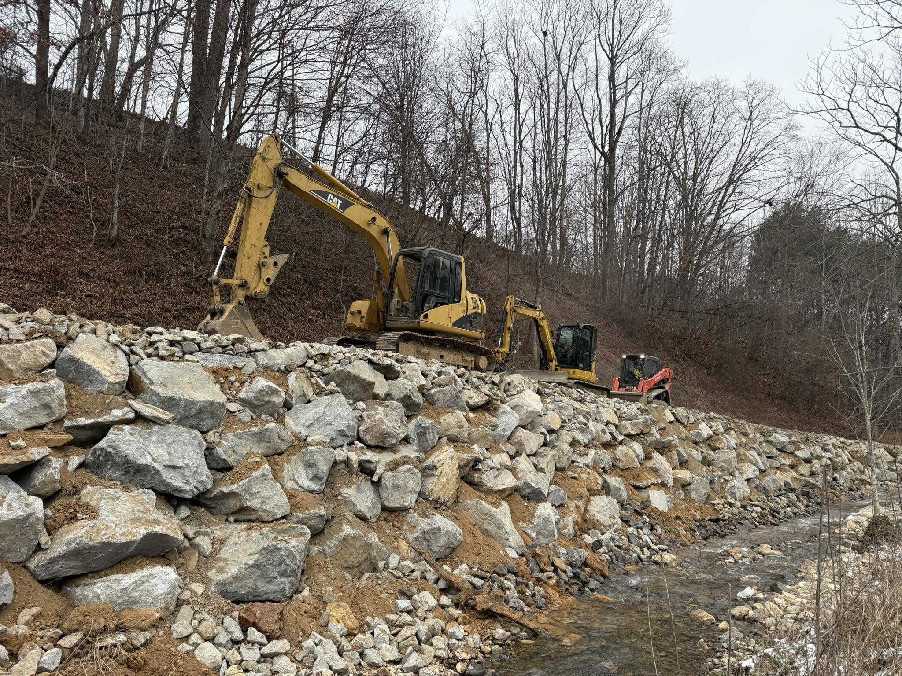
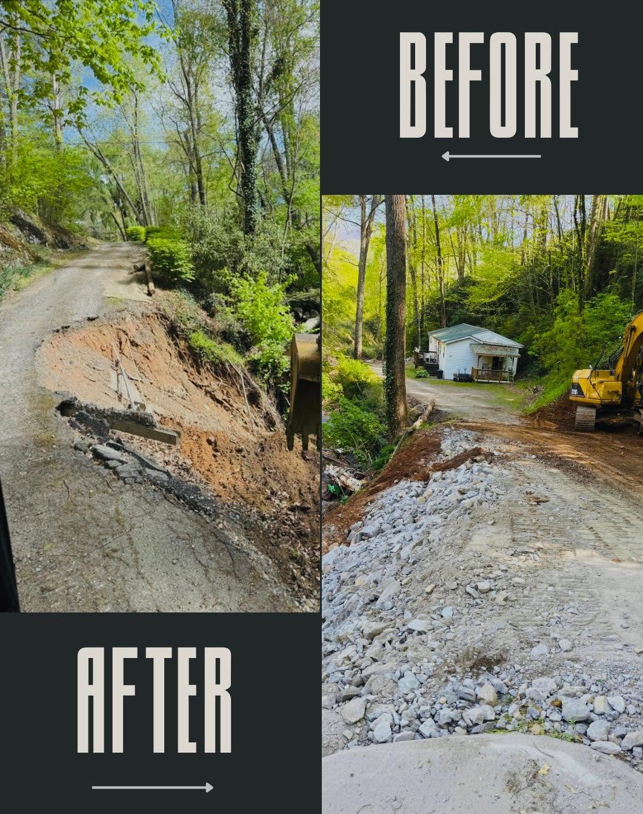
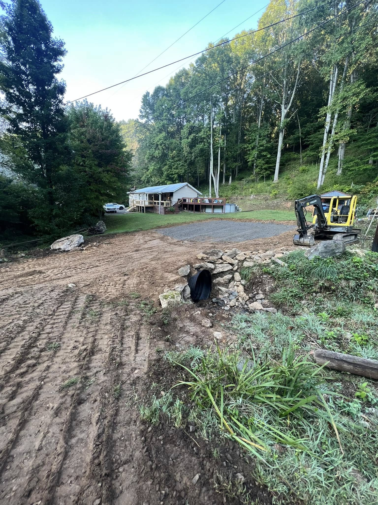
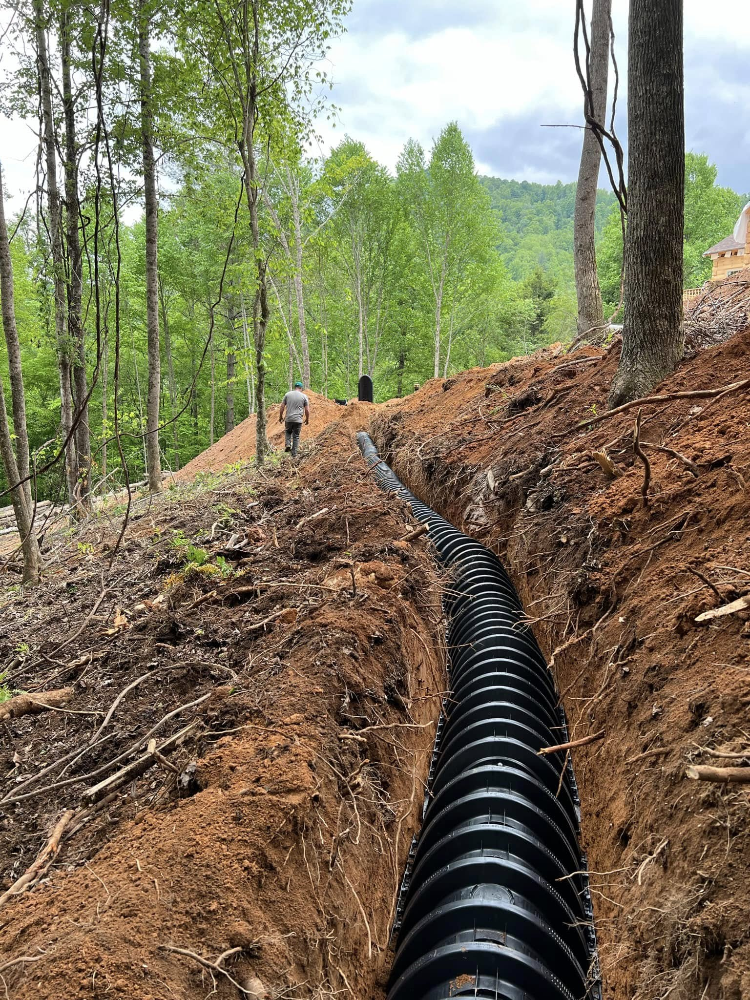
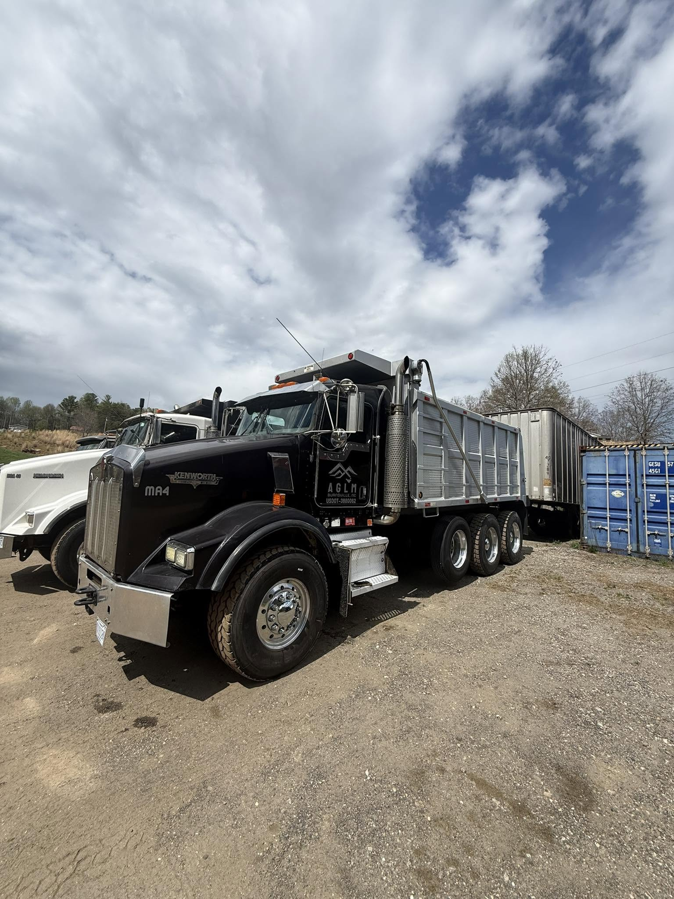

Excavation & Site Prep
Clearing & grubbing, cut & fill, undercut, and subgrade prep. Pads, roads, and parking graded and compacted to spec.
View serviceAGLM handles the full site-work scope: clearing, excavation, grading, drainage, driveways, septic, walls, and public infrastructure for commercial, development, and residential projects across the WNC mountains.
From the first tree cleared to the final grade, AGLM self-performs the work most sites need. Pick a service to see the detail, or tell us the scope and we will price it.
Clearing & grubbing, cut & fill, undercut, and subgrade prep. Pads, roads, and parking graded and compacted to spec.
View serviceClearing, grubbing, brush and stump removal, and debris haul-off on steep, wooded WNC lots, ready to grade.
View servicePrecision grading for elevation, slope, crown, and drainage. Rough grade through final grade, commercial and residential.
View serviceCulvert & pipe (HDPE/RCP), catch basins, drop inlets, swales, riprap, and underdrain. In WNC, water is what ruins sites.
View serviceNew driveways and access roads, base and gravel, culverts, and repair of washed-out mountain drives that hold up.
View serviceExcavation, tank and pump-basin setting, drain fields, connections, and final grade on steep mountain lots.
View serviceBoulder walls and engineered segmental-block walls for grade changes, slope stabilization, and erosion control.
View serviceFailing slopes and washed creek banks held with grading, riprap, boulder work, and drainage that stops the next slide.
View servicePre-qualified for NC Department of Transportation projects and code-compliant public-sector site work.
View serviceTemporary and permanent measures kept in compliance, so inspections stay clean and the schedule holds.
View serviceHauling for gravel, fill, stone, and debris, keeping spoil moving and material on site without chasing a third party.
View service
Boulder walls and engineered segmental-block walls for grade changes, slope stabilization, and erosion control. On steep WNC lots, the right wall is what turns an unusable bank into a building site, a level yard, or a drive that holds.

Mountain ground moves. When a slope starts to fail or a creek bank washes out, we stabilize it with the right combination of regrading, riprap, boulder work, and drainage, then fix the water problem that caused it so it does not come back. The same capability that builds our retaining walls and drainage holds a bank in place.

AGLM is pre-qualified for NC Department of Transportation projects and delivers code-compliant public-sector site work. We are a reliable, vetted partner for NCDOT primes and municipal offices that need work done to standard.

Temporary and permanent measures kept in compliance with environmental and regulatory requirements, so your project stays on schedule and out of trouble with inspectors.

Material in, spoil out. We haul gravel, fill, stone, topsoil, and debris so a job keeps moving without waiting on a third-party trucker. Having the hauling in-house keeps the schedule and the site under one accountable crew.
A straightforward process built so you always know where the job stands.
We walk the site, understand the scope, and give you an honest number. No sight-unseen guesses.
We sequence the work, the clearing, earthwork, drainage, and access, and coordinate with your plans and permits.
One accountable crew runs the scope in-house, so there are fewer subs to chase and fewer handoffs to go wrong.
We finish to grade, leave the site draining and clean, and keep erosion and inspections in compliance.
We work as a dependable site-work partner to the people building Western North Carolina.
Retail, light industrial, multifamily, and institutional site work.
Developers and investors preparing raw land for builds.
County and town drainage, grading, and erosion work.
Higher-end home sites, driveways, septic, and drainage.
Send us the site details. We'll get back fast.